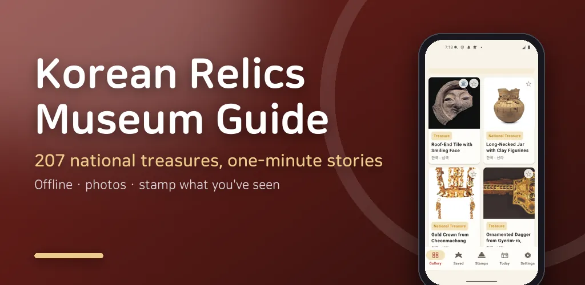
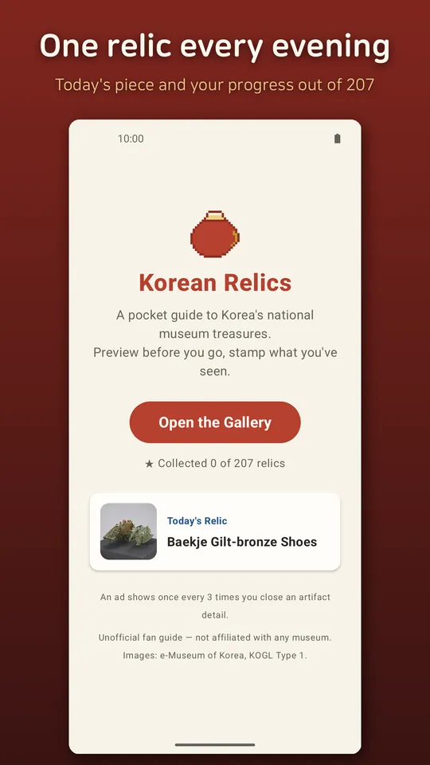
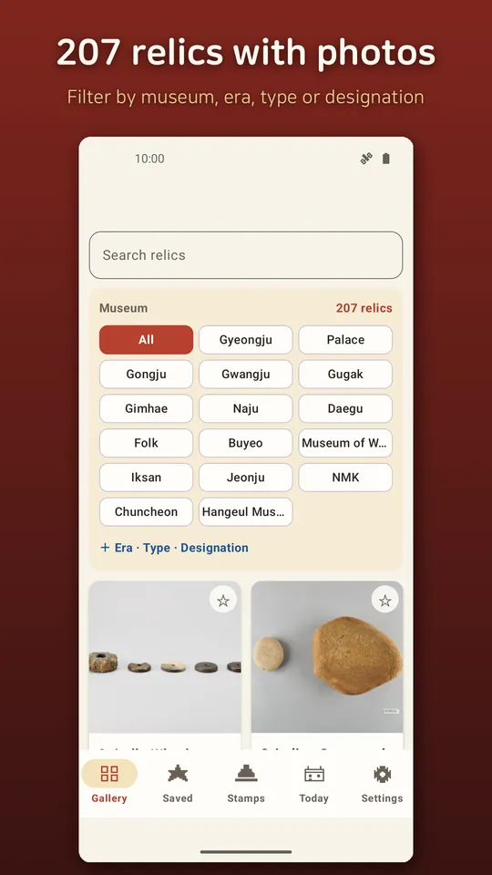
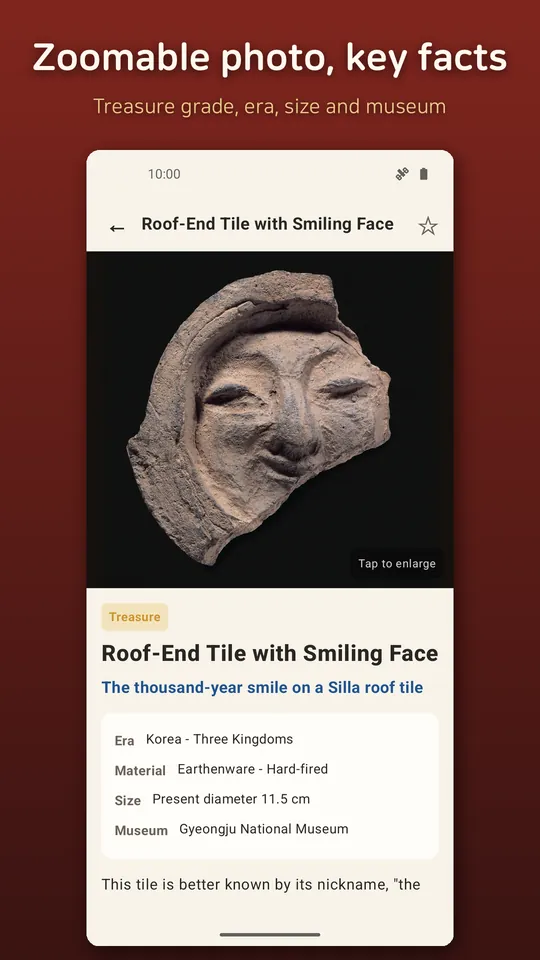
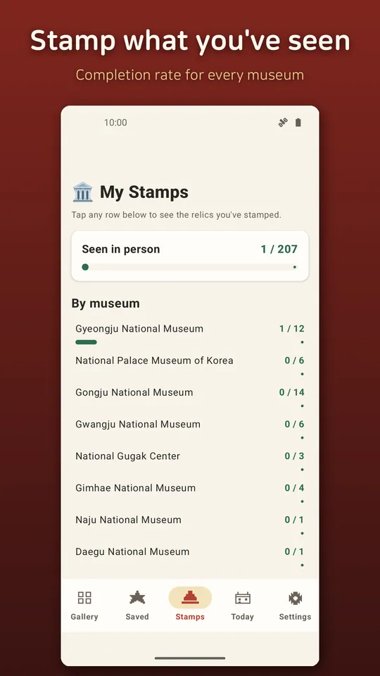
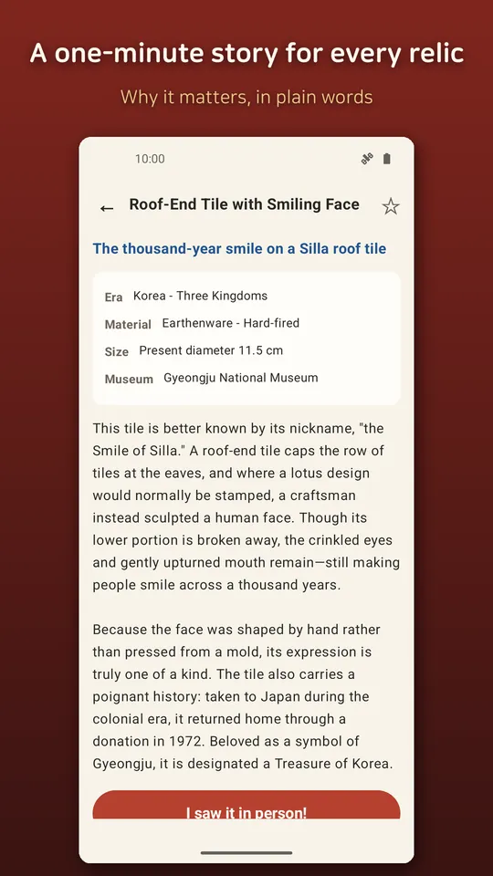

Korean Relics: Museum Guide
207 Korean relics with photos and easy history notes. Offline museum guide.






About this app
Preview before the museum, stamp after the visit.
Korea's national museums are having a moment — and once you know the stories, every gallery hits different. Korean Relics is a pocket guide to 207 masterpieces from Korea's national museums, with high-resolution photos and friendly bite-size explanations in 17 languages.
🏺 A gallery of National Treasures
The Pensive Bodhisattva, the White Porcelain Moon Jar, the Great Gilt-bronze Incense Burner of Baekje, the gold crowns of Silla, and more — 207 relics including 45 National Treasures and 43 Treasures, browsable by era, type, and museum.
🔍 Tap to zoom every detail
Tap to enlarge the inlaid patterns of Goryeo celadon or the jade pendants of a gold crown. Every image is bundled in high resolution.
📖 Friendly explanations in your language
No stiff museum-speak. Each relic gets a one-minute story about why it matters.
⭐ Collect & stamp
Save relics you love with a ★, and add a 🏛 stamp when you meet the real thing at the museum. Watch your completion rate grow by museum and by era.
🗓 Relic of the Day
One relic every evening at 8 PM — a one-minute daily culture habit.
📤 Share relic cards
Turn any relic into a beautiful shareable image card.
100% offline. No login, no account. The whole guide works in airplane mode — perfect for travel in Korea.
Great for
- Museum day-trippers who want context before they go
- Parents visiting museums with kids
- Travelers exploring Korean culture
- Anyone who enjoys completing a collection
- This is an unofficial fan guide, not affiliated with any museum. Images and collection data come from e-Museum of Korea under KOGL Type 1 (attribution), with a link to the original record on every relic page. Exhibits rotate — check each museum's website before visiting. Made by an independent developer (RealTunaLove); it does not represent the National Museum of Korea or any government agency.
📌 Sources: e-Museum https://www.emuseum.go.kr · National Museum of Korea https://www.museum.go.kr
Android · free with ads · Developer: RealTunaLove · Store listing in 17 languages
Background story: why I built it